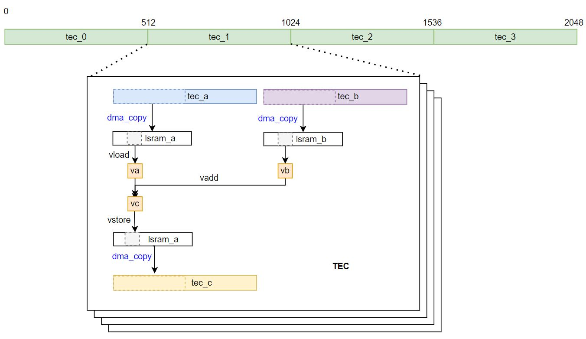

Tutorial 1: Static Add
In this tutorial, you will write a simple vector addition using Compass DSL. You will learn about:
The basic workflow of writing a static-operator
How to use LSRAM for inputs and outputs
How to use DMA to move data between LSRAM and DDR
How to split data on 4 TECs
How to vectorize using vector-builtin
To begin with a simple example, the data shape of input and output tensors in this tutorial is [2048].

Inputs & Outputs
Inputs:
Tensor(a,shape=[2048], dtype=”float16”)
Tensor(b,shape=[2048], dtype=”float16”)
Output:
Tensor(c,shape=[2048], dtype=”float16”)
So you can write the primfunc like this:
n = 2048
dtype = "float16"
@S.prim_func
def add_static(a: S.ptr(dtype, "global"), b: S.ptr(dtype, "global"), c: S.ptr(dtype, "global")):
# func body
...
Use LSRAM
The input tensors and ouput tensor are on DDR with “global” scope. You can use LSRAM (Local Memory for each TEC) for faster data access.
You can allocate a big block of LSRAM and split into small parts for different tensors.
In this case, allocate an LSRAM with 512*sizeof(float16)
Split the LSRAM into two parts:
The first half of lsram for input a: lsram_a with size 256
The second half of lsram for input b: lsram_b with size 256
Reuse lsram_a for lsram_c
The code in Compass DSL:
lsram = S.alloc_buffer([512], dtype, scope="lsram") # lsram buffer
lsram_a = lsram.addr_of(0) # ptr of first half of lsram
lsram_b = lsram.addr_of(256) # ptr of second half of lsram
Split Data for 4 TECs
The vector shapes n = 2048. Using 4 TECs for computation, each TEC computes 512 elements.
TEC0: [0:512]
TEC1: [512:1024]
TEC2: [1024:1536]
TEC3: [1536:2048]
For the code in Compass DSL, use a for loop: for ti in S.tec_range(TEC_NUM), where ti is the tec_id of each_tec.
Here is the script code:
# TEC
# ==================================================
# n = 2048, NUM_TEC = 4
# each tec compute n/TEC_NUM = 2048/4 = 512 elements
# offset of each tec is: ti* 512
TEC_NUM = 4
# tec
for ti in S.tec_range(TEC_NUM):
len_t = 512 # 2048/TEC_NUM
off_t = ti * len_t
# tec data ptr
# tec_a: a + off_t
# tec_b: b + off_t
# tec_c: c + off_t
You can also write in another way:
TEC_NUM = S.get_local_size()
ti = S.get_local_id()
Use DMA to Move Data
You can use S.dma_copy(dst, src, num_elements) to move data between DDR and LSRAM. In this case, you move input from DDR to LSRAM, compute on LSRAM, then move output from LSRAM to DDR.
S.dma_copy(lsram_a, tec_a, 256) # use DMA mov 256 elements from ddr_tec_a -> lsram_a
S.dma_copy(lsram_b, tec_b, 256) # use DMA mov 256 elements from ddr_tec_b -> lsram_b
...
S.dma_copy(tec_c, lsram_a, 256) # use DMA mov 256 elements from lsram_a -> ddr_tec_c
If the data size of each TEC exceeds the limit of LSRAM size of each TEC, you have to move the data from DDR to LSRAM in multiple loops:
loop_l = tec_n / LSRAM_SIZE
for li in range(loop_l):
S.dma_copy(lsram_a, tec_a + li * LSRAM_SIZE, LSRAM_SIZE)
S.dma_copy(lsram_b, tec_b + li * LSRAM_SIZE, LSRAM_SIZE)
...
S.dma_copy(tec_c + li * LSRAM_SIZE, lsram_a, LSRAM_SIZE)
Non-divisible cases are not considered in this simple example. You can see dynamic_add for non-divisible cases.
Vectorize
In this case, the data type is “float16”, for AIPU_X2, the vector register is 256-bit, thus the float16 vector type is “float16x16”. Vector_lane = 16
There are 256 elements on lsram_a
Each vector computes 16 elements
loop_num = 256/16 = 16
The code is:
# vectorized
# ==================================================
# dtype = float16, vector_lane = 16
# we have 256 elements on lsram_a
# each vector compute 16 elements
# the loop_num = 256/16 = 16
for vi in range(16):
# vload a vector float16x16 from lsram_a
# vload a vector float16x16 from lsram_b
va = S.vload(lsram_a + vi * 16) #can also write: va = lsram_a[vi*16:vi*16+16]
vb = S.vload(lsram_b + vi * 16)
# vector addition
vc = S.vadd(va, vb) # can also use: vc = va + vb
# store the vector into lsram
# we reuse lsram_a for output c
S.vstore(vc, lsram_a + vi * 16)
Build and Run Kernel
The AIPU BuildManager is a user interface for DSL program compilation.
To declare a BuildManager, the target is required. The default target is X2_1204.
You can then call the build method of bm to build the kernel into an executor.
def test_static_add():
# build the kernel
bm = aipu.tir.BuildManager(target="X2_1204")
ex = bm.build(add_static)
# input data
a = rand(n, dtype, low=-100, high=100)
b = rand(n, dtype, low=-100, high=100)
# run python simulator
py_out = np.zeros((n,), dtype=dtype)
add_static(a, b, py_out)
# run AIPU simulator
aipu_out = np.zeros((n,), dtype=dtype)
ex(a, b, aipu_out)
# verify result
testing.assert_allclose(py_out, gt_out, atol=1e-4)
testing.assert_allclose(aipu_out, gt_out, atol=1e-4)
Complete Code
You can find the sample code in PYTHON_PACKAGE_PATH/tvm/aipu/samples/dsl/tutorial_1_static_add.py.
The placeholder PYTHON_PACKAGE_PATH represents the location where you install the Compass DSL
Python package, in general, it will be something like ~/.local/lib/python3.8/site-packages.